Building studies
I used drawings and photographs from architects, developers and local teams to model these exteriors.
1422 Aldo Drive
The 2020 design added a plain black upper roof above the shingled slopes.


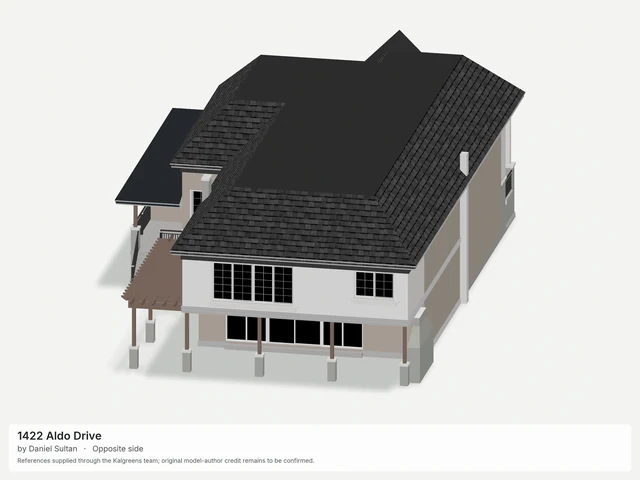

Burnhamthorpe Community Centre
Stepped roof decks shape the pool and the new exterior of the community centre.


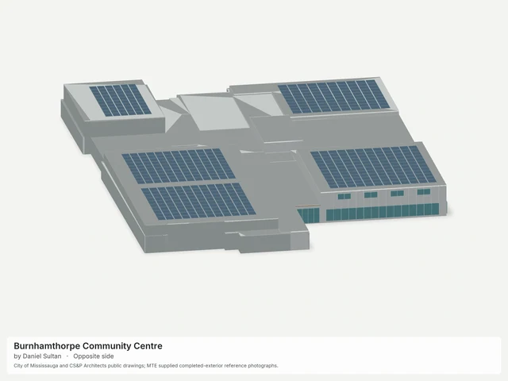

6719 Glen Erin Drive
The March 2026 plan adds a 16-storey building and 28 townhomes beside the existing apartments.


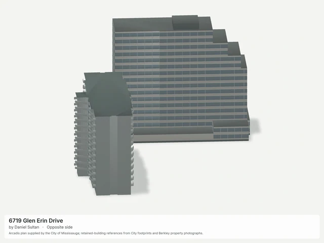

Hazelhurst Business Park
Three industrial buildings are shown together, with footprints checked against the leasing plan and city mapping.


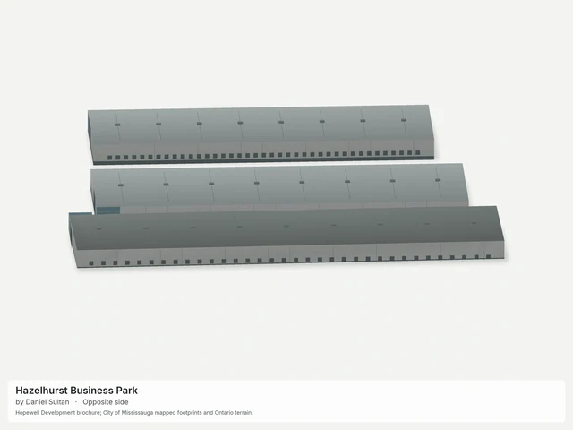

South Banks / Lakeview Village
The proposed South Banks townhomes are arranged in 17 blocks near Lakeview Village.


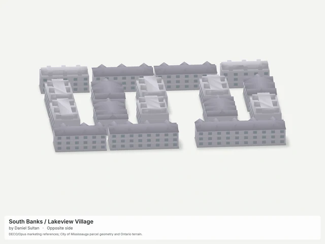

41 Bay Street
A short cross-gable joins the two main roof ridges at right angles.


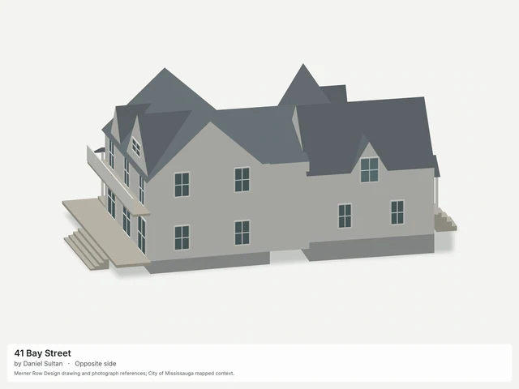

42 John Street South
The March 2025 design shows how the proposed addition would meet the original house.

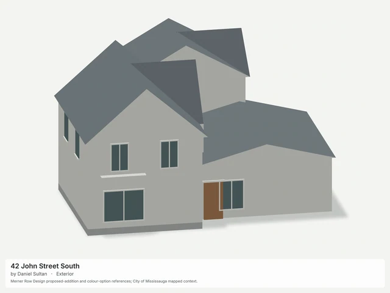


42 Peter Street South
The revised dormers and porch roof follow photographs of the completed street frontage.

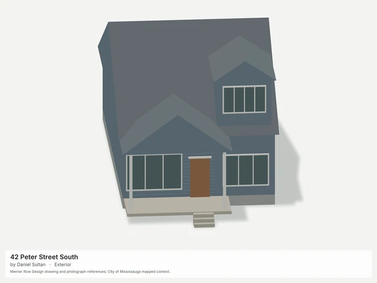


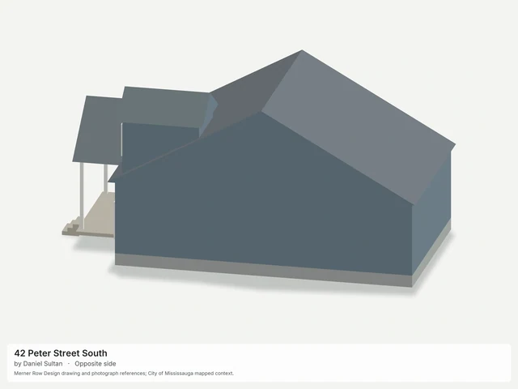

South Common Community Centre and Library
A connecting wing joins the rebuilt library, pool and community spaces.

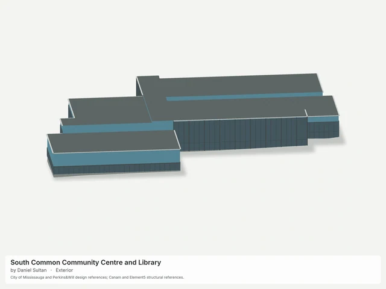


Square One, Block 22
This view shows the April 2021 design for the two towers and their shared podium.


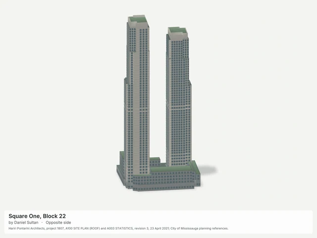

St Hilary’s Anglican Church
A triangular glazed front sits beneath the steep A-frame roof.


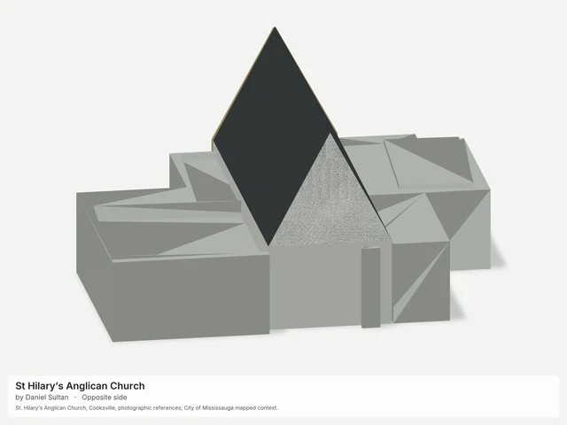